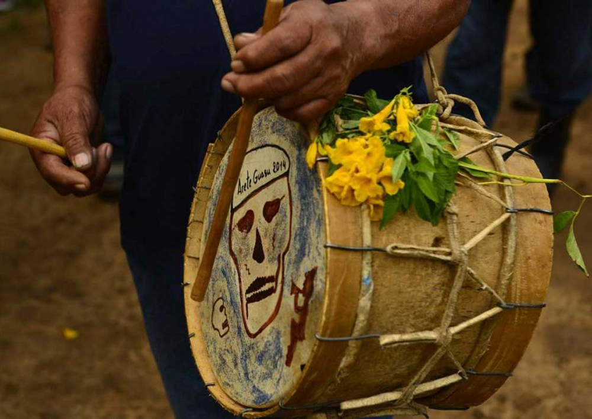

El angúa rái de los Ava
Nota 019
Inicio > Blog Bitácora de un músico > Nota 019
Los Ava, un pueblo de habla guaraní de las tierras bajas de Bolivia y Argentina, preservaron una compleja tradición musical modelada por influencias amazónicas, arawak, andinas y coloniales, pese a siglos de guerras, desplazamientos e intervención misionera. Estrechamente vinculada a rituales como el aréte guásu, su herencia musical incluye tambores, flautas, trompetas, silbatos, idiófonos y el singular violín turumi, generalmente elaborados artesanalmente por los propios intérpretes e insertos en prácticas ceremoniales, sociales y simbólicas que articulan música, danza, memoria, sexualidad, guerra y relaciones entre vivos y muertos.
Los membranófonos de los Ava constituyen una familia de tambores tubulares de doble parche, tocados exclusivamente por hombres y conocidos genéricamente como angúa, entre los que se incluyen el angúa guásu, el angúa rái y el michi rái, cuyas formas y distribución variaron históricamente entre Bolivia y Argentina.
Angúa rái significa "tambor hijo"; también se lo denomina angúa míni, "tambor pequeño". Mide 25 cm de alto y 25 de diámetro, y es el tamaño intermedio del conjunto de tambores Ava, ejerciendo el rol de tamboril o redoblante.
A diferencia del angúa guásu, la caja del angúa rái se elabora a partir de una pieza de algarrobo o de palma; los parches, por su parte, son de cuero de akúti, vizcacha (Lagostomus maximus) o teyuguásu. El parche no percutido lleva, cruzada sobre su superficie, una chirlera: un cordón de cerdas o fibras vegetales retorcidas llamado evínsa o wirapáüsa, que vibra contra la membrana provocando un efecto sonoro similar al de una caja militar europea.
El músico se cuelga el instrumento del antebrazo izquierdo y ajusta la agarradera imprimiéndole un movimiento de rotación al tambor y retorciéndola. Lo percute con dos palillos descortezados, multiplicando con redobles el pulso marcado por el angúa guásu.
Se cree que el sonido del conjunto orquestal principal de los Ava, compuesto por angúa guásu, angúa rái y flauta, mejora conforme se incrementa en él el número de angúa rái. Antaño fue utilizado en el marco de ritos funerarios hoy olvidados. En la actualidad solo mantiene vigencia durante la celebración del aréte guásu. Se atribuye a su sonido –si se produce de forma continua durante días– la capacidad de hacer levitar a los danzantes colectivamente.
Más información sobre estos artefactos sonoros puede encontrarse en el libro digital de acceso libre Instrumentos musicales de los Ava, accesible a través de la sección "Libros digitales sobre música. Serie 1".